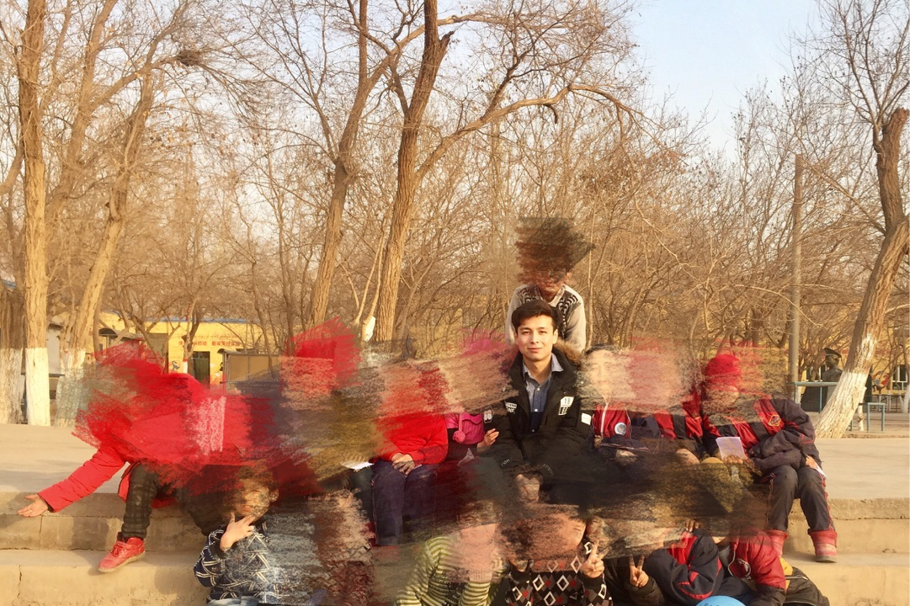

正文:

（今年寒假支教结束后的合影）
寒暑假支教，超过五年了，今年是第七年～
刚开始，是有点虚荣心的驱使～
初二那年暑假，参加了支教项目，想着权当一趟积德的旅游，结果，还是被孩子改变了………
我第一年接的都是小学一二年级的小朋友。他们那地方，虽然硬件设施很棒，但是师资匮乏。很多老师兼任不同科目，所以他们的数学真的有可能是体育老师上的……
第一批的孩子很乖，也很努力。三个星，我虽然没有给他们的生活带来多大的改变，但是至少给他们教会了汉语笔画（据我所知，他们的老师是没有教他们这些内容）以及英文字母和一些简单的日常对话。也第一次真正体会到了自己是有所价值的，自己所学的知识是有所用的。这三个星期过得很纯粹、简单、快乐。他们带给我的东西要远多于我带给他们的。
就这样，第二年我又去了，第三年接着教………没想到自己真的坚持下来了。七年，其实真的不长。
七年，我觉得自己见证了一个小地方的教育事业的发展。七年前，我第一次去那儿的时候，大部分女生是初中上完就直接嫁人生孩子了；今年，他们那儿考上重点高中的女生数量要远多于男生的数量。七年前，那儿没有一个寒暑假培训班、补习班；今年寒假，已经有了七个补习班。其实，很多人都怨高考、中考；虽然我也承认高考、中考的制度设置有很多不公平的地方，也使得评价标准趋向单一；但是，高考、中考的存在对这种小地方教育事业的发展起着莫大的推动作用的。它会给这些小地方的孩子提供一个机会，这个机会很有可能改变他们的命运。